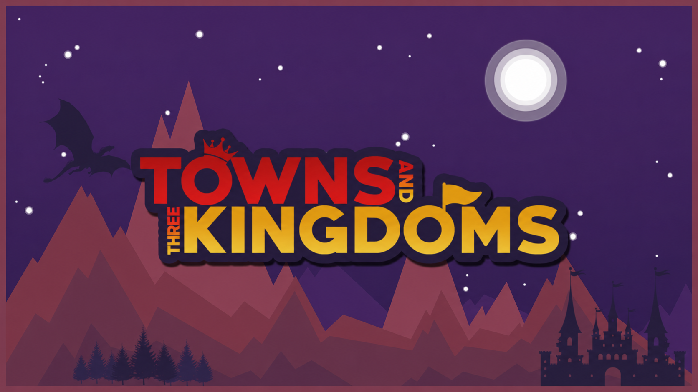

The Towns & Kingdoms field guide
A world to explore.
A kingdom to build.
Engineering, magic and adventure come together in Towns & Kingdoms, a modded Minecraft experience built around connected workshops and growing settlements.
T&K3 is in development · Minecraft 1.21.1 · NeoForge

Choose your next step
Find your way through the kingdom.
01 · Start your workshop
Progression & machine frames
Follow the production path through ten chapters. Learn which mechanism and machine frame your next workshop needs.
Open guide02 · Look up a recipe
Recipe catalogue
Search 1972 authored recipes by item, ingredient, tier and process. Open any recipe in the visual workshop.
Open guide03 · Build a reliable factory
Automation field guide
Build reliable farms and production lines. Start with collection, add buffers, and solve common factory bottlenecks.
Open guide04 · Explore the arcane
Magic & spells
Explore Ars Nouveau, Iron’s Spells and Witchery, and see how their systems meet your workshop.
Open guide05 · Grow your settlement
Towns & multiplayer
Build settlements, manage shared supplies, protect your home and connect your group’s workshops.
Open guide06 · Follow the campaign
Chapters & quests
All 353 quests: ten progression chapters, tutorials, classes, professions, mod guides and settlement projects.
Open guideTwo packs. Clear documentation.
Reading the right version?
The new T&K3 foundation and the historical T&K2 wiki have separate homes. Status labels stay visible as you browse.